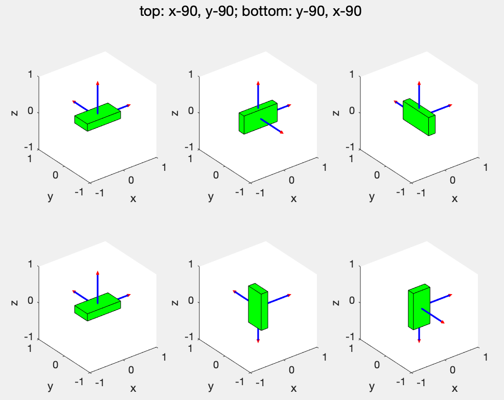
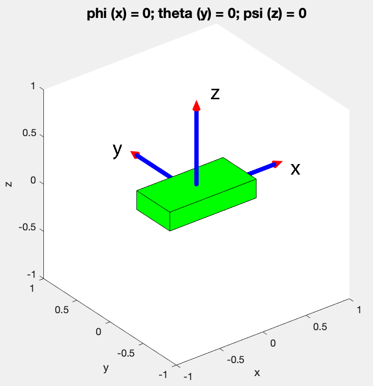
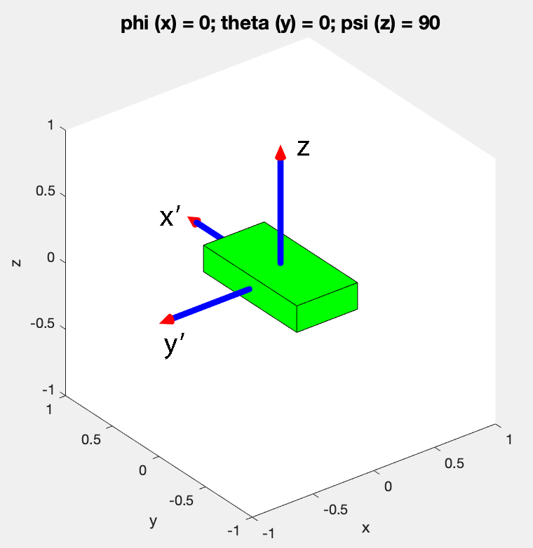
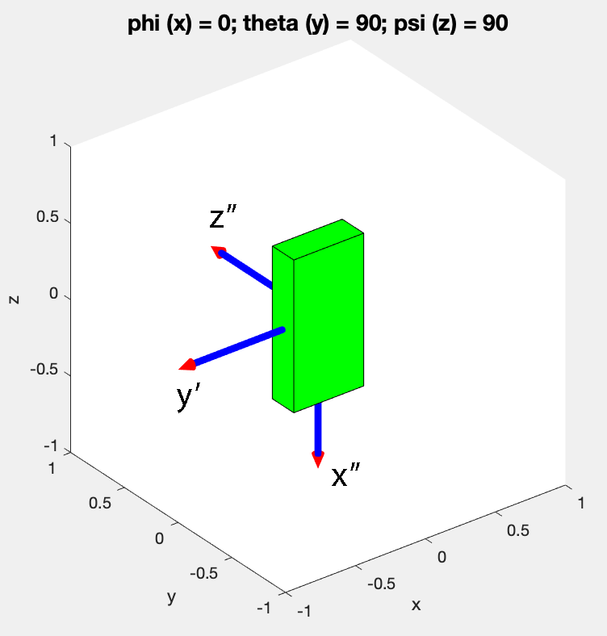
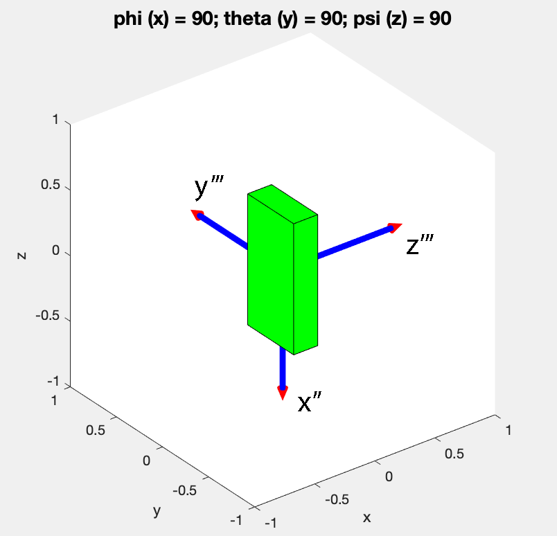

We reviewed the rotation matrix earlier. If \(c^1\) is a vector in body frame and \(c^0\) is the vector in world frame such that the angle between the two is \(\psi\) then there is a rotation matrix \(R_1^0\) that links the two.
This relation can be written more compactly as \(\boxed{c^0 = R_1^0 c^1}\) where \(\boxed{R_1^0 = \begin{bmatrix}
\cos\psi & -\sin\psi \\
\sin\psi & \cos\psi
\end{bmatrix}}\)
More generally, a rotation by an angle of \(\psi\) about the z-axis is written as.
\begin{align}
{\bf R}_z(\psi) =
\begin{bmatrix}
\cos\psi & -\sin\psi & 0 \\
\sin\psi & \cos\psi & 0 \\
0 & 0 & 1
\end{bmatrix} &&&&&&&(1)
\end{align}
Rotation by an angle $\theta$ about the y-axis is written as
\begin{align}
{\bf R}_y(\theta) =
\begin{bmatrix}
\cos\theta & 0 & \sin\theta \\
0 & 1 & 0 \\
-\sin\theta & & \cos\theta
\end{bmatrix} &&&&&&&(2)
\end{align}
Rotation by an angle $\phi$ about the x-axis is written as
\begin{align}
{\bf R}_x(\phi) =
\begin{bmatrix}
1 & 0 & 0 \\
0 & \cos\phi & -\sin\phi \\
0 & \sin\phi & \cos\phi
\end{bmatrix} &&&&&&&(3)
\end{align}
2 Parameterizing 3D rotation matrix using Euler Angles
A 3D rotation matrix can be written as
\begin{align}
{\bf R} =
\begin{bmatrix}
r_{11} & r_{12} & r_{13} \\
r_{21} & r_{22} & r_{23} \\
r_{31} & r_{32} & r_{33}
\end{bmatrix} &&&&&&&&&&(4)
\end{align}
There are \(9\) numbers but there are some conditions.
A rotation matrix needs to be orthogonal, \({\bf R}^T {\bf R} = {\bf I}\) where \({\bf I}\) is the \(3\times3\) identity matrix. This gives the following \(6\) conditions
\begin{align}
\sum_{i=1,2,3} r^2_{i1} &= 1 \nonumber \\
\sum_{i=1,2,3} r^2_{i2} &= 1 \nonumber \\
\sum_{i=1,2,3} r^2_{i3} &= 1 \nonumber \\
\sum_{i=1,2,3} r_{i1} r_{i2} &= 0 \nonumber \\
\sum_{i=1,2,3} r_{i2} r_{i3} &= 0 \nonumber \\
\sum_{i=1,2,3} r_{i3} r_{i1} &= 0 \nonumber
\end{align}
Thus, we only need \(9-6 = 3\) unique numbers to define the rotation matrix. One choice is euler angles. Euler angles describe three successive rotations about the three axis. For example rotation about x, followed by rotation about new y-axis, followed by rotation about new z-axis (denoted as x-y-z). There are 12 possible rotations possible: x-y-z, x-z-y, x-y-x, x-z-x, y-x-z, y-z-x, y-z-y, y-x-y, z-x-y, z-y-x, z-y-z, and z-x-z. Here we will stick to the z-y-x or the 3-2-1 Euler angles.
2.1 Rotations in 3D do not commute
Lets do this sequence of rotations: \(90^\circ\) along x-axis, \(90^\circ\) along new y-axis. Now lets do the rotations in the opposite sequence, \(90^\circ\) along y-axis, \(90^\circ\) along new x-axis. The program main_rotation.m shows how to these do 2 different rotations in 3D. The results are shown in Fig. 1. The final configurations in the two cases are different. Thus, rotation matrices do not commute.
3 3-2-1 Euler angles
In the 3-2-1 Euler angles, we rotate about z-axis by an angle \(\psi\) first, then about the new y-axis by an angle \(\theta\), and finally about the new x-axis by an angle \(\phi\).
3.1 Example of Euler Angles
We show an illustration of using Euler angles. Figure 2 shows three successive rotations. In (a) the box is in the initial position with axis x-, y-, and z- as shown. Then we rotate about z-axis by an angle of \(\psi\). The z-axis are unchanged but the new y- and z-axis are y' and z' as shown.

Figure 1: Illustration that rotations are not commutative. (Top) Rotate by \(90^\circ\) about x-, y-axis respectively. (Bottom) Rotate by \(90^\circ\) about y-, x- respectively.
Then we rotate by \(\theta\) about the new \(y-axis\), y' and finally by \(\phi\) about new x-axis, x'''. The MATLAB file rotation_of_a_box_231_euler.m shows this animation
3.2 Derivation of net rotation of 3-2-1 Euler angles
Next we derive an expression for the rotation matrix that from x-y-z to x'''-y'''-z'''. Let a vector in frame x-y-z be \(c^0\), in frame x'-y'-z be \(c^1\), in frame x''-y'-z'' be \(c^2\), and in frame x''-y'''-z''' be \(c^3\). Then, we can write.
\begin{align}
c^0 &= {\bf R}_z(\psi) c^1 &&&&&(5)\\
c^1 &= {\bf R}_y(\theta) c^2 &&&&&(6)\\
c^2 &= {\bf R}_x(\phi) c^3 &&&&&(7)
\end{align}We can eliminate \(c^1\), \(c^2\) to get
\begin{align}
c^0 &= {\bf R}_z(\psi) {\bf R}_y(\theta) {\bf R}_x(\phi) c^3 \nonumber
\end{align}
Thus, the net rotation matrix is \(\boxed{{\bf R} = {\bf R}_z(\psi) {\bf R}_y(\theta) {\bf R}_x(\phi)}\) and \(\boxed{{\bf r } = {\bf R} {\bf r}_b}\) where \({\bf r}\) is the position in global frame and \({\bf r}_b\) is the position in body frame.


Figure 2: Illustration of Euler angles. (a) Initial configuration, (b) Rotations by \(\psi\) along z-axis, (c) Rotation by \(\theta\) along new y-axis, and (d) Rotation along \(\phi\) along new x-axis. Here these angles are shown to be \(90^\circ\) to simplify illustration.
The rotation matrix is given by
\begin{align}
{\bf R} &= {\bf R}_z(\psi) {\bf R}_y(\theta) {\bf R}_x(\phi) \nonumber \\
&=
\begin{bmatrix}
\cos(\psi)\cos(\theta) & \cos(\psi)\sin(\phi)\sin(\theta) - \cos(\phi)\sin(\psi) & \sin(\phi)\sin(\psi) + \cos(\phi)\cos(\psi)\sin(\theta) \\
\cos(\theta)\sin(\psi) & \cos(\phi)\cos(\psi) + \sin(\phi)\sin(\psi)\sin(\theta) & \cos(\phi)\sin(\psi)\sin(\theta) - \cos(\psi)\sin(\phi) \\
-\sin(\theta) & \cos(\theta)\sin(\phi) & \cos(\phi)\cos(\theta)
\end{bmatrix} \nonumber
\end{align}
4 3D angular velocity
In 2D motion in the x-y plane and rotation by an angle of \(\theta\) along the z-plane we had \(\vec{\omega}_z = \dot{\theta} \hat{k}\) and \(\vec{v} = \vec{\omega} \times \vec{r}\) or \(\dot{\vec{r}} = \vec{\omega} \times \vec{r}\). Although the latter equation holds true, the first one does not hold true. That is, the rate of change of Euler angles is NOT equal to the angular velocity.
NOTE: Properties of skew symmetric matrices. Tell about these properties before proceeding (1) Show that \(\vec{a} \times \vec{b} = {\bf S}(a) {\bf b}\).
(2) \({\bf R} S({\bf a}) {\bf R}^T = S({\bf R} {\bf a})\).
We derive an expression of the angular velocity in the world frame \({\bf \omega}\) and \({\bf \omega}_b\) in terms of the 3-2-1 Euler angles and rates. We know that
\begin{align}
{\bf r } = {\bf R} {\bf r}_b &&&&&&&&(8)
\end{align}
Differentiating with respect to time we have
\begin{align}
{\bf \dot{r} } &= {\bf \dot{R}} {\bf r}_b \nonumber \\
&= {\bf \dot{R}} {\bf R}^{-1} {\bf r} \nonumber \\
&= {\bf \dot{R}} {\bf R}^{T} {\bf r} &&&&&(9)
\end{align}
Next we will demonstrate the \({\bf \dot{R}} {\bf R}^{T}\) is a skew symmetric matrix.
Since \({\bf R}\) is a orthogonal matrix, we have
\begin{align}
{\bf R}{\bf R}^T = {\bf I} &&&&&&&&(10)
\end{align}
where \({\bf I}\) is the identity matrix. Differentiating with respect to time we have
\begin{align}
{\bf \dot{R}}{\bf R}^T + {\bf R} {\bf \dot{R}}^T &= 0 \nonumber \\
{\bf \dot{R}}{\bf R}^T + (({\bf R} {\bf \dot{R}}^T)^T)^T &= 0 \nonumber \\
{\bf \dot{R}}{\bf R}^T + ({\bf \dot{R}} {\bf R}^T)^T &= 0 \nonumber \\
{\bf S}(a) + {\bf S}^T(a) &=0 &&&(11)
\end{align}
where \({\bf S}(a)\) is the skew symmetric matrix. The general skew symmetric matrix in 3D is written as \({\bf S} = \begin{bmatrix}
0 & -a_z & a_y \\
a_z & 0 & -a_x \\
-a_y & a_x & 0
\end{bmatrix}\).
Later on we will show that \(a = \omega\) the angular velocity. Thus, so far we have shown that \({\bf \dot{R}} {\bf R}^{T} = {\bf S}(a)\) which can be rewritten as \(\boxed{{\bf \dot{R}} = {\bf S}(a) {\bf R}}\).Next, we revisit Eqn. 13.
\begin{align}
{\bf \dot{r} } &={\bf \dot{R}} {\bf R}^{T} {\bf r} \nonumber \\
&= {\bf S}(a) {\bf r} \nonumber \\
&= \vec{{\bf a}} \times \vec{{\bf r}} \label{eqn:vel} &&&&&&&&(12)
\end{align}
where we have used the property that the cross product \(\vec{a}\times\vec{b}\) can be written as the product of a skew symmetric matrix of \({\bf S} (a)\) and vector \({\bf b}\). The velocity Eqn. 12 indicates the \(a = \omega\), the angular speed. Thus we have \(\boxed{{\bf \dot{R}} {\bf R}^{T} = {\bf S}(\omega)}\) or \(\boxed{{\bf \dot{R}} = {\bf S}(\omega) {\bf R}}\).
We are now in a position to derive an expression for the angular velocity \(\omega\).
\begin{align}
{\bf S}(\omega) &={\bf \dot{R}} {\bf R}^{T} \nonumber \\
&=\Bigg(\frac{d}{dt} {\bf R}_z(\psi) {\bf R}_y(\theta) {\bf R}_x(\phi)\Bigg) {\bf R}^{T} \nonumber \\
&= {\bf \dot{R}}_z(\psi) {\bf R}_y(\theta) {\bf R}_x(\phi) {\bf R}^{T} +
{\bf R}_z(\psi) {\bf \dot{R}}_y(\theta) {\bf R}_x(\phi) {\bf R}^{T} +
{\bf R}_z(\psi) {\bf R}_y(\theta) {\bf \dot{R}}_x(\phi) {\bf R}^{T} &&&&(13)
\end{align}
We simplify each of the terms next. The first term
\begin{align}
{\bf \dot{R}}_z(\psi) {\bf R}_y(\theta) {\bf R}_x(\phi) {\bf R}^{T} &=
{\bf S}(\dot{\psi}\hat{k}) {\bf R}_z(\psi) {\bf R}_y(\theta) {\bf R}_x(\phi) {\bf R}^{T} \nonumber \\
&={\bf S}(\dot{\psi}\hat{k}) {\bf R} {\bf R}^{T} \nonumber \\
&={\bf S}(\dot{\psi}\hat{k}) &&&&&&&&&&&&&&&&&&&(14)
\end{align}
The second term
\begin{align}
{\bf R}_z(\psi) {\bf \dot{R}}_y(\theta) {\bf R}_x(\phi) {\bf R}^{T} &=
{\bf R}_z(\psi) {\bf S} (\dot{\theta}\hat{\jmath}){\bf R}_y(\theta) {\bf R}_x(\phi) {\bf R}^{T} \nonumber \\
&= {\bf R}_z(\psi) {\bf S} (\dot{\theta}\hat{\jmath}){\bf R}_y(\theta) {\bf R}_x(\phi) ({\bf R}_z(\psi) {\bf R}_y(\theta) {\bf R}_x(\phi) )^{T} \nonumber \\
&= {\bf R}_z(\psi) {\bf S} (\dot{\theta}\hat{\jmath}){\bf R}_y(\theta) {\bf R}_x(\phi) {\bf R}^T_x(\phi) {\bf R}^T_y(\theta)
{\bf R}^T_z(\psi) \nonumber \\
&= {\bf R}_z(\psi) {\bf S} (\dot{\theta}\hat{\jmath}) {\bf R}^T_z(\psi) \nonumber \\
&= {\bf S}({\bf R}_z(\psi) \dot{\theta}\hat{\jmath}) &&&&&(15)
\end{align}
where we have put the property of skew symmetric matrix that \({\bf R} {\bf S}(a) {\bf R}^T = {\bf S} ({\bf R} a)\). Finally, the third term
\begin{align}
{\bf R}_z(\psi) {\bf R}_y(\theta) {\bf \dot{R}}_x(\phi) {\bf R}^{T} &=
{\bf R}_z(\psi) {\bf R}_y(\theta) {\bf \dot{R}}_x(\phi) {\bf R}^{T} \nonumber \\
&= {\bf R}_z(\psi) {\bf R}_y(\theta) {\bf S} (\dot{\phi}\hat{\imath}) {\bf R}_x(\phi) {\bf R}^{T} \nonumber \\
&= {\bf R}_z(\psi) {\bf R}_y(\theta) {\bf S} (\dot{\phi}\hat{\imath}) {\bf R}_x(\phi)({\bf R}_z(\psi) {\bf R}_y(\theta) {\bf R}_x(\phi) )^{T} \nonumber \\
&= {\bf R}_z(\psi) {\bf R}_y(\theta) {\bf S} (\dot{\phi}\hat{\imath}) {\bf R}_x(\phi) {\bf R}^T_x(\phi) ({\bf R}_z(\psi) {\bf R}_y(\theta))^{T} \nonumber \\
&= {\bf R}_z(\psi) {\bf R}_y(\theta) {\bf S} (\dot{\phi}\hat{\imath})({\bf R}_z(\psi) {\bf R}_y(\theta))^{T} \nonumber \\
&= {\bf S} ({\bf R}_z(\psi) {\bf R}_y(\theta) \dot{\phi}\hat{\imath}) &&&&&(16)
\end{align}
Thus, putting Eqns.14, 15, and 16 in Eqn. 13 we have
\begin{align}
{\bf S}(\omega) &= {\bf S}(\dot{\psi}) + {\bf S}({\bf R}_z(\psi) \dot{\theta}) + {\bf S} ({\bf R}_z(\psi) {\bf R}_y(\theta) \dot{\phi}) \nonumber \\
&= {\bf S} (\dot{\psi}\hat{k} + {\bf R}_z(\psi) \dot{\theta}\hat{\jmath} + {\bf R}_z(\psi) {\bf R}_y(\theta) \dot{\phi}\hat{\imath}) &&&&&&&&&&&&&&(17)
\end{align}
Thus, we have
\begin{align}
\boxed{\omega = \dot{\psi}\hat{k} + {\bf R}_z(\psi) \dot{\theta}\hat{\jmath} + {\bf R}_z(\psi) {\bf R}_y(\theta) \dot{\phi}\hat{\imath}} &&&&&&&&&&&&&&(18)
\end{align}
This provides a more general formula for angular velocity when ${\bf R}^0_n = {\bf R}^0_1 {\bf R}^1_2 {\bf R}^2_3 ... {\bf R}^{n-1}_n$.
\begin{align}
\boxed{{\bf \omega}^0_n = \omega^0_1 + {\bf R}^0_1 \omega^1_2 + {\bf R}^0_2 \omega^2_3 + ... + {\bf R}^{0}_{n-1} \omega^{n-1}_n}
&&&&&&&&&&&&&&(19)
\end{align}where \(\omega^{i-1}_i\) is the angular velocity of frame \(i\) with respect to frame \(i-1\).
The above formula can be recursively applied while coding as follows
\begin{align}
{\bf \omega}^0_2 &= \omega^0_1 + {\bf R}^0_1 \omega^1_2 \nonumber \\
{\bf \omega}^0_3 &= \omega^0_2 + {\bf R}^0_2 \omega^2_3 \nonumber \\
{\bf \omega}^0_4 &= \omega^0_3 + {\bf R}^0_3 \omega^3_4 \nonumber \\
.. & .... \nonumber \\
{\bf \omega}^0_n &= \omega^0_{n-1} + {\bf R}^0_{n-1} \omega^{n-1}_n \nonumber
\end{align}
We did a lot of work to get this expression but there is an easy intuitive way to derive by observing Fig. 2. The angular velocity can be written as
\begin{align}
\omega = \dot{\psi} \hat{z} + \dot{\theta} \hat{y}' + \dot{\phi} \hat{x}'' &&&&&(20)
\end{align}
But \(\hat{z} = \hat{k}\), \(\hat{y}' = {\bf R}_z(\psi) \hat{\jmath}\) and \(\hat{x}'' = {\bf R}_z(\psi) {\bf R}_y(\theta) \hat{\imath}\). Substituting these values in Eqn. 21 gives us Eqn. 18.
Similarly, we can also write the equation for angular speed in the body frame, \(\Omega\).
\begin{align}
\Omega = \dot{\phi} \hat{x}'' + \dot{\theta} \hat{y}' + \dot{\psi} \hat{z} &&&&&(21)
\end{align}
But \(\hat{x}'' = \hat{\imath}'\), \(\hat{y}' = {\bf R}^T_x(\phi) \hat{\jmath}'\) and \(\hat{z} = {\bf R}^T_x(\phi) {\bf R}^T_y(\theta) \hat{k}'\) where \(\hat{\imath}'\), \(\hat{\jmath}'\), and \(\hat{k}'\) are unit vectors in the body frame. Substituting we get
\begin{align}
\boxed{
\Omega = \dot{\phi} \hat{\imath} + {\bf R}^T_x(\phi) \dot{\theta} \hat{\jmath} + {\bf R}^T_x(\phi) {\bf R}^T_y(\theta)\dot{\psi} \hat{k}} &&&&&(22)
\end{align}
This provides a more general formula for angular velocity when \({\bf R}^n_0 = {\bf R}^0_1 {\bf R}^1_2 {\bf R}^2_3 ... {\bf R}^{n-1}_n\).
\begin{align}
\boxed{{\bf \Omega}_n = \omega^{n-1}_n + ({\bf R}^{n-1}_n)^T \omega^{n-2}_{n-1} + ({\bf R}^{n-2}_n)^T \omega^{n-3}_{n-2} + ... + ({\bf R}^{1}_n)^T \omega^0_1}
&&&&&(23)
\end{align}The above formula can be recursively applied while coding as follows
\begin{align}
{\bf \Omega}_1 &= \omega^0_1 \nonumber \\
{\bf \Omega}_2 &= \omega^1_2 + ({\bf R}^1_2)^T {\bf \Omega}_1 \nonumber \\
{\bf \Omega}_3 &= \omega^2_3 + ({\bf R}^2_3)^T {\bf \Omega}_2 \nonumber \\
{\bf \Omega}_4 &= \omega^3_4 + ({\bf R}^3_4)^T {\bf \Omega}_3 \nonumber \\
.. & .... \nonumber \\
{\bf \Omega}_n &= \omega^{n-1}_n +({\bf R}^{n-1}_n)^T {\bf \Omega}_{n-1} \nonumber
\end{align}
Finally, we write expression for Eqn. 18 and 22 as follow
\begin{align}
\omega =
\begin{bmatrix}
\cos(\psi) \cos(\theta) & -\sin(\psi) & 0 \\
\cos(\theta)\sin(\psi) & \cos(\psi) & 0 \\
-\sin(\theta) & 0 & 1
\end{bmatrix}
\begin{bmatrix}
\dot{\phi} \\
\dot{\theta} \\
\dot{\psi}
\end{bmatrix} &&&&&(24)
\end{align}
\begin{align}
\Omega =
\begin{bmatrix}
1 & 0 & -\sin(\theta) \\
0 & \cos(\phi) & \cos(\theta)\sin(\phi) \\
0 & -\sin(\phi) & \cos(\phi)\cos(\theta) \\
\end{bmatrix}
\begin{bmatrix}
\dot{\phi} \\
\dot{\theta} \\
\dot{\psi}
\end{bmatrix} &&&&&(25)
\end{align}
The determinant of the above matrices is \(\cos\theta\). Thus, when \(\cos\theta=0 \rightarrow \theta=90^\circ\) there is singularity in describing the angular velocity. This is an artifact of using euler angles. One can use quaternions for singularity free representation.
We can also invert Eqns. 24 and 25 to find the relation (1) between fixed frame and euler rates; (2) between body frame and euler rates; and (3) between fixed frame and body frame.